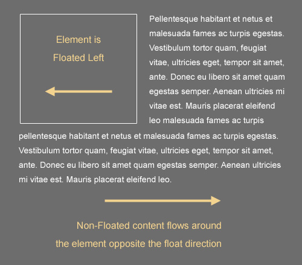

Cross Browser
Cross-browser means web application works with all versions of all browsers. To claim cross-browser compatibility, the website is nowadays expected to support browsers such as Mozilla Firefox,Google Chrome, Opera, and Safari in addition to Internet Explorer and Netscape. Here are the basic tips to make your website cross browser compatible.
The Principles Of Cross-Browser CSS Coding
It is arguable that there is no goal in web design more satisfying than getting a beautiful and intuitive design to look exactly the same in every currently-used browser. Unfortunately, that goal is generally agreed to be almost impossible to attain. Some have even gone on record as stating that perfect, cross-browser compatibility is not necessary.
While I agree that creating a consistent experience for every user in every browser (putting aside mobile platforms for the moment) is never going to happen for every project, I believe a near-exact cross-browser experience is attainable in many cases. As developers, our goal should not just be to get it working in every browser; our goal should be to get it working in every browser with a minimal amount of code, allowing future website maintenance to run smoothly.
Understand the CSS Box Model
This is one of the first things you should be thoroughly familiar with if you want to be able to achieve cross-browser layouts with very few hacks and workarounds. Fortunately, the box model is not a difficult thing to grasp, and generally works the same in all browsers, except in circumstances related to certain versions of Internet Explorer (more on this later).
The CSS box model is responsible for calculating:
- How much space a block-level element takes up
- Whether or not borders and/or margins overlap, or collapse
- A box’s dimensions
- To some extent, a box’s position relative to other content on the page
The CSS box model has the following basic rules:
- Block-level elements are essentially rectangular (as are all elements, really)
- The dimensions of a block element are calculated by width, height, padding, borders, and margins
- If no height is specified, a block element will be as high as the content it contains, plus padding (unless there are floats, for which see below)
- If no width is specified, a non-floated box will expand to fit the width of its parent minus padding (more on this later)
Some important things to keep in mind for dealing with block-level elements:
- If a box has its width set to “100%”, it shouldn’t have any margins, padding, or borders, otherwise it will overflow its parent
- Vertically-adjacent margins can cause some complex collapsing issues that may cause layout problems
- Elements positioned relatively or absolutely will behave differently, the details of which are extensive and beyond the scope of this article
- The rules and principles above are stated under the assumption that the page holding the block-level elements is rendered in standards mode

The box model as its displayed using Firebug in Firefox
Understand the Difference Between Block and Inline
For experienced developers, this is another no-brainer. It is, however, another crucial area that, when fully understood, will cause the light bulb to appear, many headaches will be avoided, and you’ll feel much more confident in creating cross-browser layouts.
The image below illustrates the difference between block and inline elements:
Here are some basic rules that differentiate block elements from inline:
- Block elements will, by default, naturally expand horizontally to fill their parent container, so there’s no need to set a width of “100%”
- Block elements will, by default, begin at the leftmost edge of the parent box, below any previous block elements (unless floats or positioned elements are utilized; see below)
- Inline elements will ignore width and height settings
- Inline elements flow with text, and are subject to typographical properties such as white-space, font-size, and letter-spacing
- Inline elements can be aligned using the vertical-align property, but block elements cannot
- Inline elements will have some natural space below them in order to accommodate text elements that drop below the line (like the letter “g”)
- An inline element will become a block element if it is floated
Understand Floating and Clearing Link
For multi-column layouts that are relatively easy to maintain, the best method is to use floats. Having a solid understanding of how floats work is, therefore, another important factor in achieving a cross-browser experience.
A floated element can be floated either left or right, with the result that the floated element will shift in the specified direction until it reaches the edge of its parent container, or the edge of another floated element. All non-floated, inline content that appears below the floated element will flow along the side of the element that is opposite to the float direction.
Here are some important things to keep in mind when floating and clearing elements:
- Floated elements are removed from the flow of other block-level, non-floated elements; so in other words, if you float a box left, a trailing paragraph (block level) that’s not floated will appear behind the float in the stack, and any text inside the paragraph (inline level) will flow around the float
- To get content to flow around a floated element, it must be either inline or else floated in the same direction
- A floated element without a declared width will shrink to the width of its content, so it’s generally best to have a set width on a float
- If a block element contains floated children, it will “collapse”, requiring a fix
- An element that’s “cleared” will avoid flowing around floated elements above them in the document
- An element that’s both cleared and floated will only clear itself of elements that come before, not after
Use Internet Explorer First (Or Don’t)
Please note that Smashing Magazine’s team strongly advises against developing websites in Internet Explorer first. In our opinion, sites should be developed in “modern” web-browsers, with standards first and then be tweaked for buggy versions of Internet Explorer. The advice below does not reflect the opinion of the Smashing Editorial team. Agree or disagree? Comment on this article!
Most of what I’ve discussed so far has to do with CSS coding and layout principles. This principle is more related to habits and preferences of most designers. Although we might hate to use IE6 and IE7 in our everyday internet activities, when it comes time to build a client project from scratch, one of the best things you can do is test your layout in those browsers early in development. You might even want to open up a standalone version of IE6 or IE7 and just start your development in that browser.
Of course, you won’t have access to tools like Firebug, but generally for CSS (especially early in development) you won’t need Firebug. It’s much easier to get a layout working first in IE6 and IE7, then fix for other browsers, than to do it the other way around. Waiting until late in the development process to open up IE6 and/or IE7 will likely cause some, if not all, of the following problems:
- Multiple hacks will be required, needing separate stylesheets for different versions of IE, making the code bloated and less maintainable and making the website slower
- The layout in some spots may have to be reworked, multiplying development time
- Testing time will increase, sometimes exponentially, leaving less time for more important tasks
- The layout in other browsers will not be the same as in IE6 and IE7
I wouldn’t expect developers to use Internet Explorer this aggressively for personal projects, web apps, or other non-client work. But for corporate clients whose user base is primarily on Internet Explorer, this tip could prevent a lot of headaches while getting things to work properly, and will definitely make a cross-browser experience much more likely.
Sometimes viewing IE’s problems as “annoying bugs” can create unnecessary negativity, and can hinder development time and future maintenance. Dealing with IE is a fact of life for designers and developers, so just view its problems as you would any CSS issue — and build from there.
Understand Internet Explorer’s Most Common Problems
If you’re going to start with IE in your development, or at the very least check your layout in IE early on, then you should understand what things Internet Explorer (usually versions 6 & 7) has problems with, or what its limitations are.
A detailed discussion of every possible problem that can occur in Internet Explorer, and a list of all of its CSS compatibility issues is certainly beyond this article. But there are some fairly significant inconsistencies and issues that come up in relation to IE that all CSS developers should be aware of. Here is a rundown of the most common problems you’ll need to deal with:
- IE6 will become problematic if floats are overused, causing (paradoxically) disappearing content or duplicate text
- IE6 will double the margin on floated elements on the side that is the same direction as the float; setting display: inline will often fix this
- In IE6 and IE7, if an element doesn’t have layout, it can cause a number of problems, including backgrounds not showing up, margins collapsing improperly, and more
- IE6 does not support min- and max-based CSS properties like min-height, or max-width
- IE6 does not support fixed positioning of background images
- IE6 and IE7 do not support many alternate values for the display property (e.g. inline-table, table-cell, table-row, etc.)
- You cannot use the :hover pseudo-class on any element in IE6 except an anchor ()
- Certain versions of IE have little support for certain CSS selectors (e.g. attribute selectors, child selectors, etc.)
- IE versions 6-8 have little support for CSS3, but there are some workarounds
There are many more bugs, issues, and inconsistencies that can arise in Internet Explorer, but these are probably the most common and most important ones to keep in mind when trying to create a cross-browser experience. I encourage all developers to do further research on many of the issues I’ve mentioned above in order to have a more accurate understanding of what problems these issues can cause, and how to handle them.
Some Things Will Never Look the Same Link
As already mentioned, creating the exact same experience visually and functionally in every browser is possible, but unlikely. You can get the layout and positioning of elements close to pixel-perfect, but there are some things that are out of the developer’s control.
FORMS WILL OFTEN LOOK DIFFERENT
Discussing all the differences and quirks that occur with form elements across the different browsers and platforms could be an article in itself, so I won’t go into extensive details here. A simple visual demonstration, however, should suffice to get the point across.
Take a look at the image below, which displays the
<select>elements appear differently in different browsers
Some form elements can be controlled visually. For example, if the client requires that the submit button looks the same in every browser, that’s no problem, you can just use an image, instead of the default <input type="submit">, which, similar to <select> elements, will look different in different browsers.
But other form elements, like radio buttons, textarea fields, and the aforementioned
TYPOGRAPHY WILL ALWAYS LOOK DIFFERENT
Another area in which we can’t expect pixel-perfect designs is with regards to fonts, particularly fonts on body copy. Different methods have sprung up to help with custom fonts in headers, and the recently launched Google Font API will contribute to this. But body copy will probably always look different in different browsers.
With typography, we not only face the problem of font availability on different machines, but in some cases even when the font is available on two different machines, the type will look different. Windows ClearType, for example, is available on IE7, but not on IE6, causing the same font to look different on two different versions of IE.
The graphic below displays screenshots from A List Apart on IE6 and IE7. The grainy text in IE6 is more evident on the heading than in the body copy, but all text displays a marked difference between the two browsers (unless of course the text is an image):
A List Apart’s typography compared in IE6 and IE7
Use a CSS Reset
Ever since I started using a CSS reset for my projects, my ability to create a cross-browser experience has greatly increased. It’s true that most resets will add unnecessary code to your CSS, but you can always go through and remove any selectors that you know will not be a factor (for example, if you don’t plan to use the
tag, then you can remove reference to it, and repeat this for any other unused tags).Many of the margin- and padding-related differences that occur across different browsers become more normalized (even in troublesome HTML forms) when a CSS reset is implemented. Because the reset causes all elements to start from a zero base, you gain more control over the spacing and alignment of elements because all browsers will begin from the same basic settings.

A CSS reset as shown in Firefox’s developer toolbar
Besides the benefits of producing a cross-browser experience, a reset will also be beneficial because you won’t use as many hacks, your code will be less bloated, and you’ll be much more likely to create maintainable code. I recommend Eric Meyer’s CSS reset, which I’ve been using for quite some time now.
Use SitePoint’s CSS Reference Link
If you’re having trouble getting a particular CSS property to display correctly across all browsers, look up the property in the SitePoint CSS Reference to see if it has any compatibility limitations. SitePoint’s reference (which is also available as a hard copy, though not as up to date), includes a useful compatibility chart that displays browser support for every standard CSS property.
SitePoint’s Compatibility Charts for CSS Properties
Each compatibility chart is accompanied by a fairly detailed description of the bugs that occur in different browsers, and users are permitted to add comments to document new bugs that come up and to provide further explanations on complex CSS issues. Using this as a guide, you can narrow down the possibilities, and can usually determine whether or not a CSS issue is due to a browser bug, or due to your own misapplication or misunderstanding of the CSS property in question.
Define Valid Doctype
Your doctype tells the browser what rules you’ll be using in your code. If you don’t specify, the browser has to guess, and different browsers will guess differently. When you design in “strict mode,” Internet Explorer 6 and above will show behavior much closer to that of Firefox, Safari and other modern browsers.
<!DOCTYPE HTML PUBLIC "-//W3C//DTD HTML 4.01//EN" "http://www.w3.org/TR/html4/strict.dtd">
Otherwise, Internet Explorer runs in a “quirks mode” where it attempts to emulate the behavior of older browsers.
CSS Reset
By default, Different browsers behave as per their default css rules. You need to explicitly define css to make same behavior for different browsers. I like Eric’s CSS reset:
http://meyerweb.com/eric/thoughts/2007/05/01/reset-reloaded/
http://meyerweb.com/eric/tools/css/reset/index.html
Conditional Comments
Try to use conditional comments instead of CSS hacks.
With conditional comments you can link to separate style sheets for different browsers.
<link type="text/css" href="style.css" />
<!--[If IE]>
<link type="text/css" href="IEHacks.css" />
<![endif]-->
<!--[if !IE]>
<link type="text/css" href="NonIEHacks.css" />
<![endif]-->
Try to use javascript library like jQuery, YahooUI, MooTools, Dojo abstract away the differences in the DOM, AJAX and JavaScript.
Try to use javascript library like jQuery, YahooUI, MooTools, Dojo abstract away the differences in the DOM, AJAX and JavaScript.
You can use Css Frameworks like BluePrint, 960 Grid. These are mostly cross browser compatible.
See following to know which css framework is suitable for you.
http://net.tutsplus.com/tutorials/html-css-techniques/which-css-grid-framework-should-you-use-for-web-design/
Validate
The W3C Validation Service validates multiple versions of XHTML and HTML, outputting many useful errors and warnings to help users create a perfect website.
W3C Validator: http://validator.w3.org/
W3C Css Validator: http://jigsaw.w3.org/css-validator/
Testing
I would suggest you to start with firefox and then move to IE. Use Firebug, a firefox addon and IE Developer Toolbar for IE to set layout. To test website on different browser, there are some online and offline utilities like browsershots, IETester, browsercam.